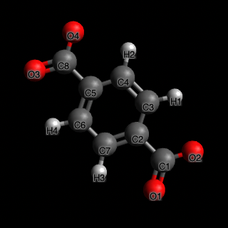
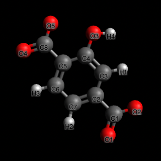
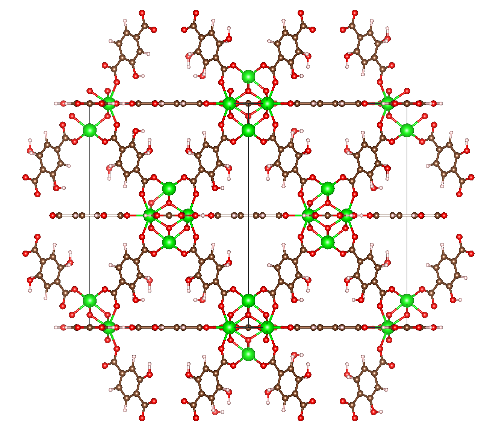
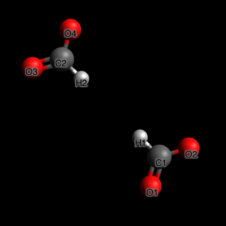
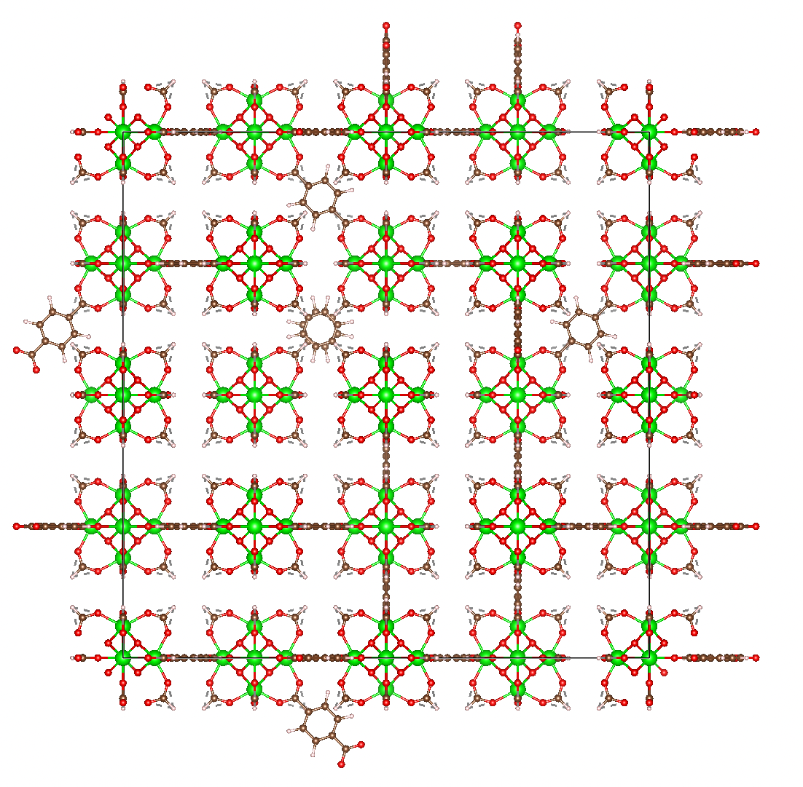

Examples
Supporting files for all examples can be found in the main repo at docs/examples/.
Example 1: functionalizing a MOF
For this example, we will take the UiO-66 MOF and functionalize its linker with a hydroxyl group. We have provided all the files for this example, but if you were do this procedure on your own structure, you would need to take the following steps:
- Prepare the structure file as a P1 CIF or a P1 LAMMPS data file.
- Prepare the search pattern. In this example, we are searching for the linker of UiO-66, which is a biphenyl linker. We used Vesta to pick one linker in the structure, deleted all other atoms, then exported to a file format that Avogadro can read. We opened the file in Avogadro and saved as CML.
- Prepare the replacement pattern. The replacement pattern needs to lie in the same coordinate system as the search pattern. The easiest way to do this is to start with the search pattern and simply not move any of the atoms unless you want to move them with the replacement operation. For this example, we took the search pattern CML, replaced one of the hydrogens on the biphenyl group with an oxygen atom, and added the attached hydrogen to make the hydroxyl. We used avogadro's "fix atoms" feature to fix all the atoms except for the newly added ones, then ran optimize structure to let the OH group find a more appropriate position. (Note that if you do not fix ALL the atoms except for the hydroxyls, many of the atoms will move when you optimize and the atoms of your replacement pattern may insert into an odd position!)


Once you have the files prepared, the find / replace operation is very simple. In Python:
from mofun import Atoms, replace_pattern_in_structure
structure = Atoms.load("uio66.cif")
uio66_linker = Atoms.load("uio66-linker.cml")
uio66_linker_oh = Atoms.load("uio66-linker-oh.cml")
structure_oh = replace_pattern_in_structure(structure, uio66_linker, uio66_linker_oh)
structure_oh.save("uio66-oh.lmpdat")
In your shell:
If you look in the output uio66-oh.cif file, you will see the hydroxyls on all the linkers.

Example 2: introducing defects into a MOF
For this example, we will introduce defects into UiO-66 by randomly removing linkers from the structure. We will first replicate the structure to a 2x2x2 so it fulfills minimum image conventions. We do this before adding defects, so that the defects aren't repeated in the structure. We will create defects for 10%, and 90% of all linkers. (Clearly, having 90% of linkers be defective would create a non-viable structure, but it is easier to visualize).
As in example 1, we will need to prepare the structure file, search pattern and replacement pattern. See above for discussion on how we typically do that. We can use the structure and search pattern files from example 1, but we will need a replacement pattern where the biphenyl ring is removed and there are formate caps where the linker would attach to the metal center.

In Python:
from mofun import Atoms, replace_pattern_in_structure
structure = Atoms.load("uio66.cif").replicate((2,2,2))
uio66_linker = Atoms.load("uio66-linker.cml")
uio66_linker_defective = Atoms.load("uio66-linker-defective.cml")
defective10 = replace_pattern_in_structure(structure, uio66_linker, uio66_linker_defective, replace_fraction=0.10)
defective10.to_ase().write("uio66-defective-10.cif")
defective90 = replace_pattern_in_structure(structure, uio66_linker, uio66_linker_defective, replace_fraction=0.90)
defective90.to_ase().write("uio66-defective-90.cif")
In your shell:
mofun uio66.cif uio66-defective-10.cif -f uio66-linker.cml -r uio66-linker-defective.cml --replicate 2 2 2 --replace-fraction=0.10
mofun uio66.cif uio66-defective-90.cif -f uio66-linker.cml -r uio66-linker-defective.cml --replicate 2 2 2 --replace-fraction=0.90

Example 3: parameterizing a replicated MOF using only parameterized linker and metal centers
For this example, we start with an unparameterized CIF file, and then we find and replace both the linker and the metal center with parameterized versions, thus parameterizing the full structure across periodic boundaries. For this to work, you will need to have overlapping patterns; the parameterized linker and the parameterized metal center will share some atoms. This is necessary to define 3-body (angle) or 4-body (dihedral, improper) force field terms near the edge of the pattern. If you have only two-body terms (i.e. bond) then the patterns only need to share the atom that connects the metal center to the linker (so that all bonds are defined); if you have three-body terms, then an extra atom will need to be shared; for four-body terms, another extra atom will be shared between the patterns.
- Prepare parameterized linker and metal center LAMMPS data files.
In Python:
from mofun import Atoms, replace_pattern_in_structure
structure = Atoms.load("uio66.cif")
uio66_linker = Atoms.load("uio66-linker-Zr.cml")
uio66_linker_params = Atoms.load("uio66-linker-Zr-parameterized.lmpdat")
uio66_mc = Atoms.load("uio66-metal-center.cml")
uio66_mc_params = Atoms.load("uio66-metal-center-parameterized.lmpdat")
param1 = replace_pattern_in_structure(structure, uio66_mc, uio66_mc_params)
param2 = replace_pattern_in_structure(param1, uio66_linker, uio66_linker_params)
param2.save("uio66-parameterized.lmpdat")
In your shell:
mofun uio66.cif uio66-param1.lmpdat --find uio66-metal-center.cml \
--replace uio66-metal-center-parameterized.lmpdat
mofun uio66-param1.lmpdat uio66-parameterized.lmpdat --find uio66-linker-Zr.cml \
--replace uio66-linker-Zr-parameterized.lmpdat
While we use separate files above for clarity, it is also possible to use the parameterized files for both the search and replace patterns, like this:
mofun uio66.cif uio66-param1.lmpdat --find uio66-metal-center-parameterized.lmpdat \
--replace uio66-metal-center-parameterized.lmpdat
mofun uio66-param1.lmpdat uio66-parameterized.lmpdat --find uio66-linker-Zr-parameterized.lmpdat \
--replace uio66-linker-Zr-parameterized.lmpdat
This may be confusing at first glance, since we are finding the same pattern that we are replacing it with. However, the find operation only looks at the positions of the atoms (and does not require that the force field terms match); for the replace operation, all the atom positions stay the same but the appropriate force field terms are inserted.
To evaluate whether the final structure is valid, you will need to look at the resulting LAMMPS data file and check the connectivity and the force field terms, since visually, the structure will look identical.